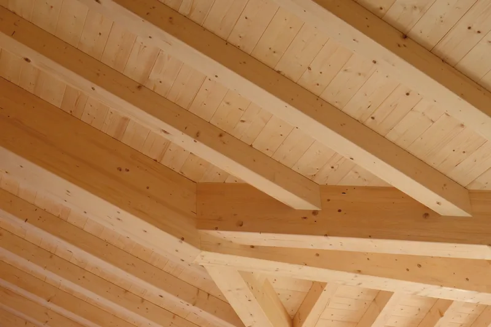

Il tetto nasce in segheria.Tetti in legno e legname da costruzione a Borgo Chiese (TN)
Dal 1972 tagliamo, essicchiamo e lavoriamo il legno qui a Giulis, in Valle del Chiese, e lo portiamo fino al cantiere.

Tetti e strutture in legno
Il legno lo scegliamo, lo tagliamo e lo lavoriamo noi, qui. Per questo possiamo seguire il tetto dal primo sopralluogo fino agli elementi pronti da montare in cantiere.
- Legno massello
- Abete e larice delle foreste trentine certificate PEFC, stagionati in essiccatoio. Naturale, senza colle. Siamo stati tra le prime aziende trentine con la marcatura CE per il massello a uso strutturale.
- Bilama e lamellare
- Da foreste di Svezia e Finlandia. Il bilama ha l'aspetto del massello con meno fessure da ritiro; il lamellare supera i due metri di altezza di sezione e permette anche le travi curve.
- Sovralzi e case al grezzo
- A X-lam o a telaio: si montano a secco e in poco tempo, e il legno aiuta a tenere l'umidità della casa in equilibrio.
- Soppalchi, solai, portici e chioschi
- Le stesse lavorazioni per i lavori più piccoli, compresi i cassonetti per le finestre da tetto.

Come nasce un tetto
-

Sopralluogo
Veniamo a vedere e a misurare, anche con il rilievo strumentale.
-

Progetto
L'ufficio tecnico disegna il progetto esecutivo e la distinta di ogni pezzo.
-

Taglio
Il centro Hundegger a controllo numerico taglia travi e incastri, comprese le sedi per piastre a scomparsa, spinotti e bulloni.
-

In cantiere
Gli elementi arrivano già tagliati, pronti da montare.
Oppure chiamate lo 0465 621159.
Legname da costruzione
Due linee di segagione Primultini, un impianto multilame e un refendino: la sezione e la lunghezza che vi servono, in tempi brevi. Per privati, magazzini e imprese.
 Travi su distinta
Travi su distinta Tavole da ponte
Tavole da ponte Perline
Perline Morali e listoni
Morali e listoni Listelli
Listelli Uso fiume e uso Trieste
Uso fiume e uso Trieste Prismato per edilizia
Prismato per edilizia Sottomisure
Sottomisure Pannelli a tre strati
Pannelli a tre strati
E poi piallato per faccia a vista, pannelli per armatura, compensati fenolici, OSB e multistrato. Perlinati in abete e larice in vari spessori, e pavimenti in legno come rivenditori autorizzati Parkemo.
- Essiccatoio
- Essiccazione a forno, per abbassare l'umidità del legno prima di lavorarlo.
- Marcatura CE
- Legno massiccio strutturale classificato secondo la resistenza, norma UNI EN 14081-1.
- Trattamento HT
- Certificazione FITOK per il legno degli imballaggi da esportazione, secondo lo standard ISPM-15.
- Finiture
- Piallatura, spazzolatura, impregnazione per il legno esposto alle intemperie, rusticatura per l'effetto antico.
Per un ordine veloce: 0465 621159.
Tetti che abbiamo fatto
Case, baite, alberghi, portici: alcune delle strutture uscite dalla nostra segheria negli ultimi anni.





La segheria dei Lombardi
Nel 1972 Franco Lombardi rileva con due soci la segheria di Giulis, in Valle del Chiese. All'inizio si fanno segati e commercio di legname. Oggi Franco guida l'azienda insieme ai figli Serafino, Mirco e Mirella.
In mezzo ci sono le due linee di segagione, l'essiccatoio, il centro di taglio a controllo numerico e un ufficio tecnico che progetta i tetti. Il legno segue tutta la strada qui: dall'arrivo dei tronchi al pezzo finito.
E niente si butta: la segatura diventa pellet, gli scarti vanno agli impianti di riscaldamento a biomassa della regione.


Certificazioni

Marcatura CE Legno massiccio a uso strutturale, UNI EN 14081-1.

Consiglio superiore dei lavori pubblici Qualificati dal 2011 per la lavorazione di elementi strutturali in massello e lamellare.

PEFC Legno da foreste gestite in modo sostenibile.

FITOK Trattamento fitosanitario per gli imballaggi da esportazione.
- Scarica i certificati
Domande che ci fanno spesso
Vendete legname anche ai privati?
Sì. Lavoriamo per privati, magazzini e imprese, e tagliamo sezione e lunghezza su misura, in tempi brevi.
Che legno usate per i tetti?
Massello di abete e larice dalle foreste trentine certificate PEFC, stagionato in essiccatoio. Per le luci più grandi o le travi curve, bilama e lamellare da foreste di Svezia e Finlandia.
Il legno per le strutture è certificato?
Sì: il massello a uso strutturale ha la marcatura CE secondo la UNI EN 14081-1, e dal 2011 siamo qualificati dal Consiglio superiore dei lavori pubblici per la lavorazione di elementi strutturali in massello e lamellare.
Fate il legno per gli imballaggi da esportazione?
Sì, con il trattamento termico HT secondo lo standard ISPM-15 e il marchio FITOK.
Cosa serve per un preventivo?
Una telefonata allo 0465 621159 o due righe con le misure indicative e il comune del cantiere. Se avete disegni o foto del tetto attuale, mandateli: si parte da lì, poi veniamo a vedere.
Raccontateci il lavoro
Un tetto nuovo, un rifacimento o un carico di tavole: bastano due righe, poi vi richiamiamo noi. Se avete disegni o foto, allegateli alla mail.